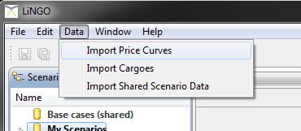

Commodity price curves can be updated via a CSV upload. This can be performed on an individual scenario or group basis. This can be accessed from the “Import Price Curves” item in the “Data” application menu.

A dialog will open up with a number of options.
Select the CSV data file containing the source data.
For format and decimal separators depend on how the file has been created. Microsoft Excel will create a CSV file using the system Locale settings. For a UK locale this means the format separator is a comma and the decimal separator is a period. In Europe the format separator is typically a semicolon and the decimal separator is a comma.
Finally choose whether to update all scenarios, the scenario currently being edited or a user defined selection from the tree.
Press the “Finish” button to import the data into all chosen scenarios.
Other curves (base + charter), export as CSV, overwrite, re-import